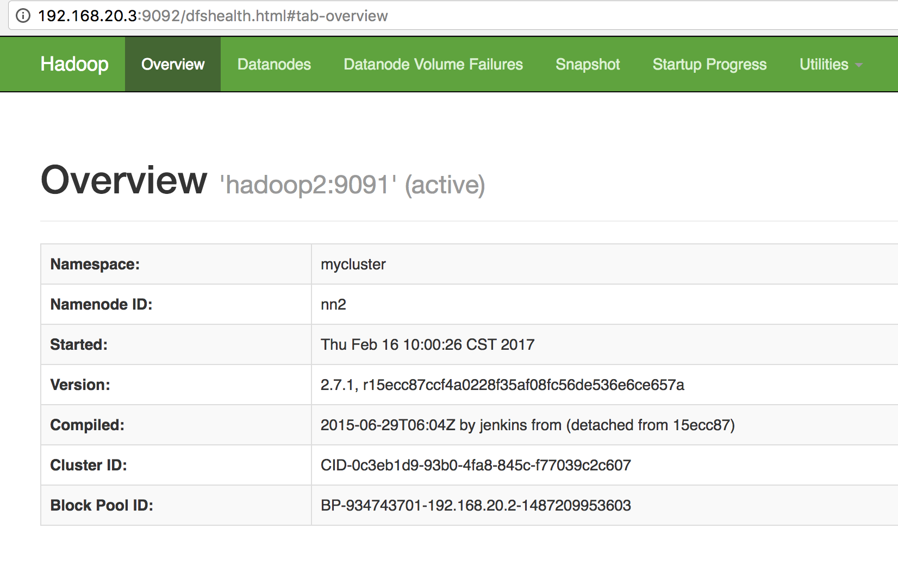

前言
本篇介绍Hadoop的一些常用知识。要说和网上其他manual的区别，那就是这是笔者写的一套成体系的文档，不是随心所欲而作。
HA模式，主要是将namenode及resourcemanager都变成主备两个。这里先不讨论resourcemanager，主要针对namenode。
将namenode变成可主备自动切换的，主要是通过zookeeper集群对namenode的健康状态进行监控，然后选举一个健康的namenode做active(主)的，另一个成为standby(备)。因此，保证zookeeper集群的配置是正确且不易挂掉，是HA的基石。同时，注意HA升级过程中的相关进程的启动步骤即可完成。
官网有两种配置：NFS和QJM，两者区别参见:《HDFS v2 HA方案对比》
本文以NFS为例进行讨论。
首先声明环境：
- CentOS 6.5 64位
- Hadoop 2.7.1
- Java 1.8
所有操作均基于拥有第一代hadoop集群的环境之上。同时满足Centos 6.5系统内网络互通、机器免密码登陆、防火墙关闭。重要的是/etc/hosts文件如下：
192.168.20.2 hadoop1
192.168.20.3 hadoop2
192.168.20.4 hadoop3
192.168.20.5 hadoop4
192.168.20.6 hadoop5
另外，温馨提示：在hadoop的各种文件配置中，最好不要出现空格。例如：
<property>
<name>ha.zookeeper.quorum</name>
<value>hadoop2:2181, hadoop3:2181, hadoop4:2181</value>
</property>
hadoop将无法找到hadoop3和hadoop4这种IP。如果手贱多敲，那么将会浪费很多时间。
进程功能介绍
zk:维护共享锁保证只有一个active的namenode
journalnode：在两个nn间同步元数据
配置zookeeper集群
该集群最少需要3台机器（用于选举）。下面详述配置过程。
假设1： 3台机器是这样：
| IP | 标识 |
|---|---|
| 192.168.20.3 | hadoop2 |
| 192.168.20.4 | hadoop3 |
| 192.168.20.5 | hadoop4 |
假设2： 下载完的zookeeper源码包位于：/home/deploy/zookeeper-3.4.9。
假设3：java环境为1.8版本，位于：/home/deploy/jdk1.8.0_111。
第一步，配置zoo.cfg:vi /home/deploy/zookeeper-3.4.9/conf/zoo.cfg
修改配置:
# The number of milliseconds of each tick
tickTime=2000
# The number of ticks that the initial
# synchronization phase can take
initLimit=10
# The number of ticks that can pass between
# sending a request and getting an acknowledgement
syncLimit=5
# the directory where the snapshot is stored.
# do not use /tmp for storage, /tmp here is just
# example sakes.
dataDir=/home/deploy/zookeeper-3.4.9/data
# logs dir
dataLogDir=/home/deploy/zookeeper-3.4.9/logs
# the port at which the clients will connect
clientPort=2181
server.1=hadoop3:2888:3888
server.2=hadoop4:2888:3888
server.3=hadoop2:2888:3888
第二步，配置myid文件
在zoo.cfg中dataDir路径：dataDir=/home/deploy/zookeeper-3.4.9/data下，新建myid文件。vi myid
在hadoop3的机器上，该文件内容为1，
hadoop4机器上，该文件内容为2，
hadoop5机器上，该文件内容为3。内容应保持同zoo.cfg中的server.x的x值相同
第三步，开/关zookeeper集群：
开：sh /home/deploy/zookeeper-3.4.9/bin/zkServer.sh start
关：sh /home/deploy/zookeeper-3.4.9/bin/zkServer.sh stop
请在将三台机器全部开启后，查看状态：zkServer.sh status。
配置core-site.xml
在原文件上进行添加:
<!-- 指定hdfs的nameservice为h01，需与dfs.nameservices一致 -->
<property>
<name>fs.defaultFS</name>
<value>hdfs://mycluster</value>
</property>
<!-- 指定zookeeper地址 -->
<property>
<name>ha.zookeeper.quorum</name>
<value>hadoop2:2181,hadoop3:2181,hadoop4:2181</value>
</property>
配置hdfs-site.xml
这里有两步，第一步是删除关于secondary namenode的配置，第二步是添加HA的配置。
删：
<!-- 以下3个 property 的配置，是非HA模式下的，即一个集群只有一个namenode，在这里不可使用 -->
<property>
<name>dfs.http.address</name>
<value>h01.vm.com:50070</value>
<description>Secondary get fsimage and edits via dfs.http.address</description>
</property>
<property>
<name>dfs.secondary.http.address</name>
<value>h02.vm.com:50090</value>
</property>
<property>
<name>dfs.namenode.checkpoint.dir</name>
<value>/home/vagrant/VMBigData/hadoop/data/namesecondary</value>
</property>
添：
<!-- 命名空间的逻辑名称 -->
<property>
<name>dfs.nameservices</name>
<value>mycluster</value>
</property>
<!-- 命名空间中所有NameNode的唯一标示。该标识指示DataNode集群中有哪些NameNode -->
<property>
<name>dfs.ha.namenodes.mycluster</name>
<value>nn1,nn2</value>
</property>
<property>
<name>dfs.namenode.rpc-address.mycluster.nn1</name>
<value>hadoop1:9091</value>
</property>
<property>
<name>dfs.namenode.rpc-address.mycluster.nn2</name>
<value>hadoop2:9091</value>
</property>
<property>
<name>dfs.namenode.http-address.mycluster.nn1</name>
<value>hadoop1:9092</value>
</property>
<property>
<name>dfs.namenode.http-address.mycluster.nn2</name>
<value>hadoop2:9092</value>
</property>
<!-- JournalNode URLs，ActiveNameNode 会将 Edit Log 写入这些 JournalNode 所配置的本地目录即 dfs.journalnode.edits.dir -->
<property>
<name>dfs.namenode.shared.edits.dir</name>
<value>qjournal://hadoop2:8485;hadoop3:8485;hadoop4:8485/mycluster</value>
</property>
<!-- JournalNode 用于存放 editlog 和其他状态信息的目录 -->
<property>
<name>dfs.journalnode.edits.dir</name>
<value>/home/deploy/hadoop-2.7.1/journaldata</value>
</property>
<property>
<name>dfs.ha.automatic-failover.enabled</name>
<value>true</value>
</property>
<property>
<name>dfs.client.failover.proxy.provider.mycluster</name>
<value>org.apache.hadoop.hdfs.server.namenode.ha.ConfiguredFailoverProxyProvider</value>
</property>
<!-- 一种关于 NameNode 的隔离机制(fencing) -->
<property>
<name>dfs.ha.fencing.methods</name>
<value>
sshfence
shell(/bin/true)
</value>
</property>
<property>
<name>dfs.ha.fencing.ssh.private-key-files</name>
<value>/home/deploy/.ssh/id_rsa</value>
</property>
<property>
<name>dfs.ha.fencing.ssh.connect-timeout</name>
<value>30000</value>
</property>
修改slaves文件
主要是把作为namenode节点的ip从该文件中删除，视各自机器环境而定。
启动HA集群
启动顺序，非常讲究。。。
重要的一点：不容许使用 hdfs namenode -format的命令，此命令会删除原集群的所有数据。
第一步，先关所有的集群进程。
第二步，打开zookeeper集群：sh /home/deploy/zookeeper-3.4.9/bin/zkServer.sh start
第三步，打开journalnode进程，该进程在两个nn间同步元数据。在hadoop2\3\4上都执行：
sh hadoop-daemon.sh start journalnode
第四步，在原namenode节点上执行：sh hadoop-daemon.sh start namenode。
此操作会将namenode状态变成active。
第五步，在备（standby）节点执行同步namenode数据的命令：hdfs namenode -bootstrapStandby。
切记不要使用scp的方式同步元数据，会导致文件权限问题。
第六步，启动备namendoe：sh hadoop-daemon.sh start namenode
第七步，初始化zkfc。在主备两台上任意一台执行：hdfs zkfc -formatZK
第七步，启动zk(DFSZKFailoverController)，该进程维护共享锁保证只有一个active的namenode。分别在两台作为NN的节点上执行：sh hadoop-daemon.sh start zkfc
第八步，启动hdfs集群（就是打开所有的datanode进程）：sh start-dfs.sh
第九步，打开没有任何变化的yarn：sh start-yarn.sh。上面说了暂时不讨论resourcemanger的升级。
至此，hadoop集群双NN的升级就完成了。
效果展示
第一步， 打开两个NN的监控页：


第二步：kill hadoop1的namenode进程，查看hadoop2中namenode的状态由standby变为active：

重复几次，主备仍能自切。